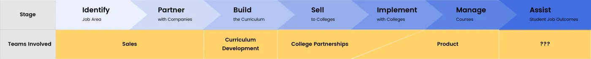
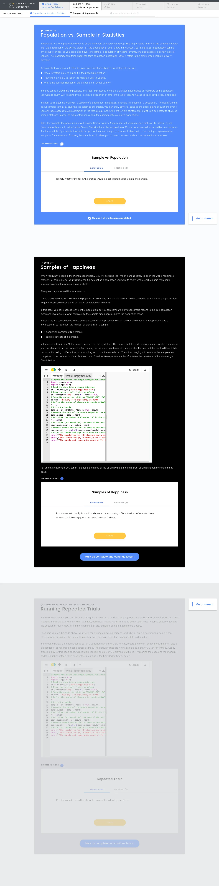
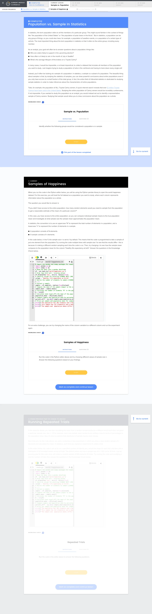

Pathstream
Rebuilding the lesson, mid-flight
Redesigning the core surface of a live learning platform, without breaking the sixty-plus hours of course content already running on it.
- Role
- Senior Product Design Manager, operating as lead designer. First design hire.
- Scope
- Research, design, spec, and handoff across student, instructor, and course-author modes
- Platforms
- Web, mobile
- When
- 2019–2020, seventeen months
Shipped to a live platform serving adult learners at partner colleges, without forcing a rewrite of 60–80 hours of existing course content.
I never measured whether it worked. That was my mistake and it is the most useful thing in this case study.
Week one
I was the first design hire, which meant nobody was going to tell me what to do. My first list was mostly questions:
- Audit the system, the website, the whole surface
- Map the customer journey and the ecosystem
- Read up on LTI, on SSO, on grade passback
- Look at how Blackboard, Canvas, Brightspace and Moodle solve this
Two of those questions turned out to shape the next seventeen months. How do you roll out design changes while courses are live? And how much of the LMS should we own versus inherit?

The diagnosis
Three weeks in I audited twenty-six screens of the live product and scored it against its own model of how a student actually uses it. It failed at every stage:
Our current lesson page design is bad at all stages.
Browse: we show total time and a student can scroll through to see what is included.
Commit: there is no active way to commit.
Do: the one long scroll of ~60 minutes of content is boring and easy to get lost.
Complete: there is no sense of accomplishment.
The research backed it up in the students' own language. They did not trust the time estimates and had learned to ignore them. One put the real problem plainly: "60 minutes is too long. 30 minutes would be better. I want to know how to plan my time."
These were working adults fitting coursework around jobs. A sixty-minute unlabeled scroll is not a content problem, it is a planning problem.
The constraint that shaped everything
This is the part that made it hard, and the part I would lead with if I were telling it out loud.
The platform was live. Real students were mid-course. And every structural change I made created migration work for a course-author team I did not manage.
A secondary goal is to minimize the amount of re-work course authors will need to do to accommodate the new designs.
Timing is a challenge. We can't make major changes mid-cohort, and thus the window between December and January, and April and May, are our primary options.
So the design had to be backward compatible by default. Existing content had to land somewhere sensible with nobody touching it:
- Place all existing blocks in Part 1
- Add the lesson title as the Part 1 title
- If there is only one part, do not show the part number at all
That last rule is the one I am proudest of. It means a course author who does nothing sees no change, and an author who opts in gets the new structure. The migration cost is zero until someone chooses to pay it.
Chunking the lesson
The fix was to break the single scroll into parts a student could see, choose, and finish. That meant a new level in the data model, not just a new layout. Parts became a real entity with its own database record.


Two treatments, tested against each other
I built the full lesson page twice to settle an argument about how much visual weight progress should carry.


Beyond the student
The same structure had to serve three audiences. Instructors needed to see who was falling behind, before the student dropped. I specified the dashboard in states, including the empty one, which is the state most specs forget.
The archived dashboard visual is temporarily withheld while institution names and photographic avatars are replaced with safe mock data.
The interface had drifted
Alongside the redesign I inventoried what the platform was already using, and annotated every value with where it appeared. The audit is the argument:
- Sixteen colors, of which four different grays were all labeled "Text"
- Two different values both called "Primary Button"
- Body copy set at four different sizes
- A 10.3px type size, shipping to adult learners
I designed the shared foundation on top of Ant Design and worked closely with Matt, the engineer who implemented it in React, Storybook, and Chromatic. I did not write production code at Pathstream. I also killed an icon-only progress timeline I liked, because it carried meaning in shape alone and would have failed anyone using a screen reader.
It shipped
Code merged. I wrote the implementation spec covering student, instructor and course-author modes, plus mobile, plus the backward-compatible defaults above.
What I got wrong
I ran a retro on myself, with dates:
October 7: actual macro design decisions, +17 days.
October 30: actual initial design completion and handoff, +13 days.
Challenges: aligning on macro design decisions, over-aggressive goals on polish.
Three things I would do differently, and I wrote them down at the time:
- Evaluate course-author impact sooner. Biggest gotcha. I found the migration constraint after I had already committed to a direction.
- Be more in the understanding side before jumping to the design.
- We needed a design gate more formal than Slack. Toward the end things sped up and nobody could tell when a decision was final.
The same problem, from the other side
Before the lesson work I spent months on Labs, the virtualized workspace where students actually did the thing they were learning: SQL in a real MySQL Workbench, Unity in a real editor, running in the browser. It was the platform's whole "learn by doing" premise and its clearest competitive differentiator.
It served three audiences at once: students doing the work, instructors grading it, and course authors building it. I wrote the PRD for all three.
The student problems rhymed with the lesson page. Labs were static: no feedback until an instructor looked, if ever. Daunting: every instruction dumped into one long sidebar. Rigid: no way to resize the tool against the instructions. And you could not tell where you had left off.
The sharpest thing in the research was not from a student. It was a course author's own account of building a lab, step by step, in his words:
Load lab to see what it looks like. Get water, check slack, check phone, while lab is loading.
Get excited if lab loads correctly. If not, send [our engineer] a message or troubleshoot on my own. Sometimes it doesn't load because I inputted the load file incorrectly; sometimes bad wifi; sometimes who knows why.
He had built a personal ritual around not knowing how long a machine would take, or whether it had worked. Nobody designed that ritual; the absence of a loading state did. And it is the same failure as the sixty-minute scroll, aimed at a different person. Nobody in this system could tell where they were or how long anything would take. Not the student, not the instructor, not the author.
That reframed Labs from an interface problem into a set of systems questions, which is what I ended up writing down: where does a student actually arrive from the LMS, and is that intentional? Should the lab preload while someone reads the introduction? Is work autosaved, and how does a student return to it? How is latency handled, and what does the interface say while it waits?
One question in that PRD is the one I would still ask today: how do we get students to be confident they know what they are doing, rather than figuring out what they are doing? Micro-emotions, I called it. It is the difference between a tool that works and a tool someone trusts.
The student-facing browser and virtual-machine updates shipped. The broader three-audience vision did not ship in full before I moved onto the lesson redesign.
The one that still bothers me
I wrote the success criteria: time on site, bounce rate, lesson completion. The baseline analysis sat with the PM. It never came back, and I shipped anyway.
So I have a redesign I believe in, built on real research, with a migration path that cost the content team nothing, and no idea whether it moved a number.